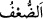

ALLÂH’IN VÂDİ GERÇEKTİR
54. Sizi güçsüz yaratan, sonra güçsüzlüğün ardından kuvvet veren ve sonra
kuvvetin ardından güçsüzlük ve ihtiyarlık veren Allah’tır. O, dilediğini yaratır. O,
hakkıyla bilendir, üstün kudret sâhibidir.
55. Kıyâmet koptuğu gün, günahkârlar, (dünyâda) ancak pek kısa bir süre
kaldıklarına
yemin
ederler.
İşte
onlar,
(dünyâda
da
haktan)
böyle
döndürülüyorlardı.
56. Kendilerine ilim ve îman verilenler şöyle derler: Andolsun ki siz, Allâh’ın
yazısında (hükmedildiği gibi) yeniden dirilme gününe kadar kaldınız. İşte bugün
yeniden dirilme günüdür; fakat siz onu tanımıyordunuz.
57. Artık o gün, zulmedenlerin (beyan edecekleri) mazeretleri fayda vermeyeceği
gibi, onlardan Allâh’ı hoşnut etmeye çalışmaları da istenmez.
58. Andolsun ki biz, bu Kur’an’da insanlar için her çeşit misale yer vermişizdir.
Şâyet onlara bir âyet getirsen inkârcılar kesinlikle şöyle diyeceklerdir: Siz ancak
bâtıl şeyler ortaya atmaktasınız.
59. İşte bilmeyenlerin (hakkı tanımayanların) kalplerini Allah böylece mühürler.
60. (Resûlüm!) Sen şimdi sabret. Bil ki Allâh’ın vâdi gerçektir. (Buna) iyice
inanmamış olanlar, sakın seni gevşekliğe sevketmesin!
Ey insanlar! “Sizi güçsüz” zayıf bir asıl olan nutfe veya topraktan “yaratan,”
Allah’tır.
“ ve “ kuvvetin zıddıdır. İkisi arasındaki fark şudur. Fetha (üstün) ile